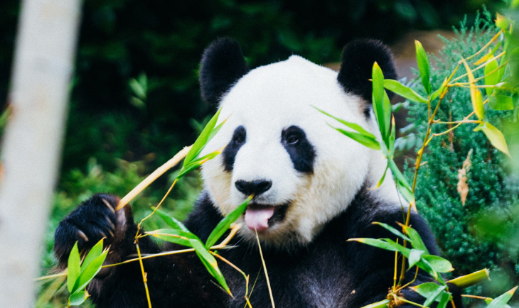

パンダ
パンダは、ネコ目（食肉目）に属するジャイアントパンダ（クマ科）とレッサーパンダ（レッサーパンダ科）の2種の総称。熊猫（シュウマオ）とも。ジャイアントパンダとレッサーパンダは食肉目に属しながらともに草食適応を果たした種であるが、Ledje and Arnasonの分子系統解析などにより両者は近縁ではないと結論づけられている。中国を代表する動物だが、生息地は四川省の一部などと狭く、中国全土に生息しているわけではない。
一覧へ戻る
パンダは、ネコ目（食肉目）に属するジャイアントパンダ（クマ科）とレッサーパンダ（レッサーパンダ科）の2種の総称。熊猫（シュウマオ）とも。ジャイアントパンダとレッサーパンダは食肉目に属しながらともに草食適応を果たした種であるが、Ledje and Arnasonの分子系統解析などにより両者は近縁ではないと結論づけられている。中国を代表する動物だが、生息地は四川省の一部などと狭く、中国全土に生息しているわけではない。